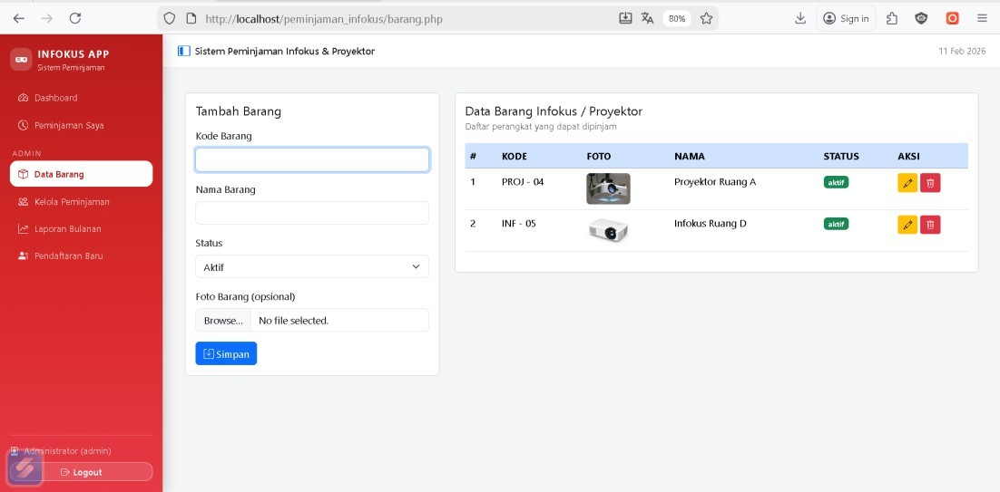

Featured Projects

SIMKAMAS (Sistem Manajemen Kegiatan Masyarakat)
Backend Developer Desa PaniisAplikasi berbasis web yang dibangun menggunakan Python (Framework Flask) sebagai backend dan MySQL sebagai database. Aplikasi ini bertujuan untuk membantu perangkat desa dalam mengelola kegiatan dan acara masyarakat secara terstruktur dan terdokumentasi.
Highlight Fitur:
- Sistem Multi-User dengan pembagian hak akses (Admin, Staf, dan Pimpinan).
- Keamanan Login & Logout berbasis session serta RBAC.
- Dashboard visualisasi data interaktif menggunakan Chart.js.
- Implementasi Trigger pada Logic Level untuk merekam jejak audit ke tabel log.
- Pembuatan Laporan dan Export format CSV otomatis.

Sistem Manajemen Lavora Laundry
Fullstack Web Developer Proyek AplikasiAplikasi web untuk mengelola operasional bisnis laundry secara menyeluruh dari hulu ke hilir dengan sistem pembatasan akses berbasis peran (Middleware Role).
Highlight Fitur:
- Dashboard statistik operasional real-time.
- 3 Hak Akses: Admin (Data Master), Kasir (Transaksi), Owner (Monitoring).
- Manajemen siklus: Pelanggan, Paket, Transaksi, hingga Status Laundry.
- Modul kasir dengan perhitungan otomatis dan cetak nota fisik.

Aplikasi Peminjaman Infokus & Proyektor
Project Manager & System Analyst Proyek Akademik KampusMengembangkan aplikasi manajemen inventaris sirkulasi peminjaman proyektor infokus. Saya memimpin analisis kebutuhan, mendesain alur sistem (Flowchart & Use Case), hingga eksekusi akhir.
Highlight Fitur:
- Formulir pengajuan peminjaman oleh user / mahasiswa.
- Panel Admin untuk proses Approval (persetujuan/penolakan).
- Manajemen data inventaris aset dan rekam jejak peminjaman.
- Otomatisasi pembuatan laporan sirkulasi barang.

SIAKAD (Sistem Informasi Akademik) SD
Web Developer Digitalisasi PendidikanSistem informasi berbasis web yang dirancang khusus untuk memodernisasi dan mempermudah digitalisasi administrasi birokrasi di tingkat Sekolah Dasar secara terpusat.
Highlight Fitur:
- Manajemen pendaftaran siswa baru dan profil siswa aktif.
- Sistem rekapitulasi nilai akademik dan absensi harian kelas.
- Modul pengelolaan jadwal pelajaran dan database staf pengajar.